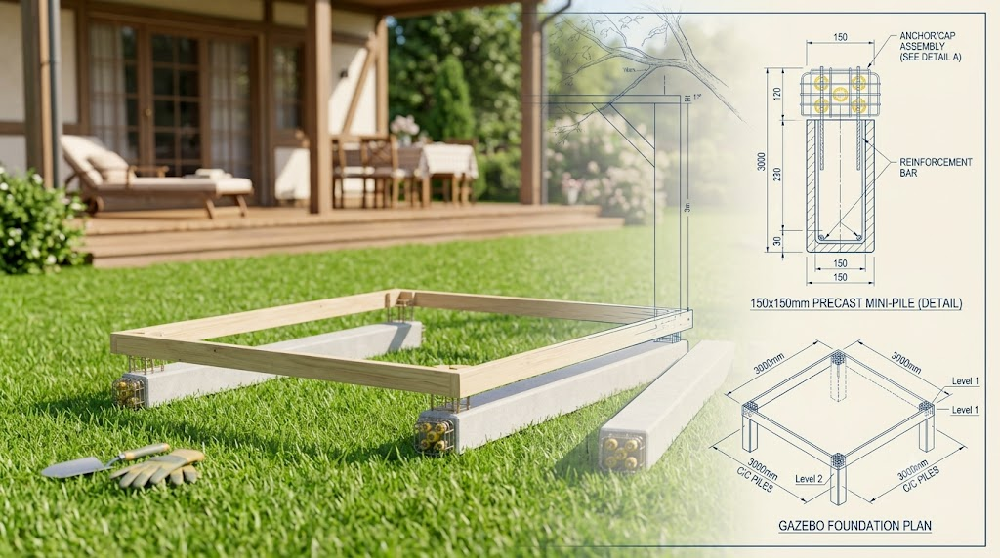
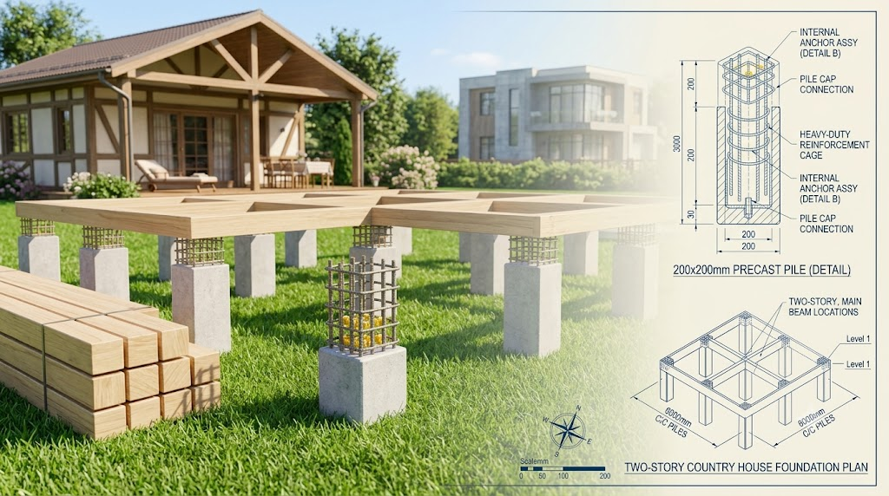
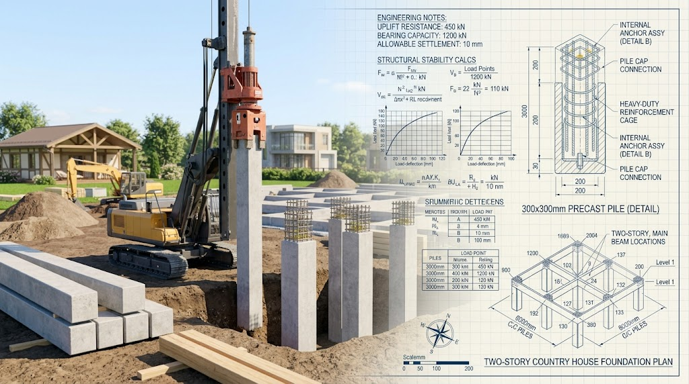

Забивные ЖБ сваи
от производителя
Мы предлагаем профессиональный монтаж забивных железобетонных свай для частного и промышленного домостроения. Наши конструкции подбираются индивидуально на основе анализа грунта, нагрузок проектируемого здания и архитектурных особенностей вашего проекта.
Сечение 150 × 150 мм — «Облегченный стандарт»
Это мини-сваи, которые стали настоящим спасением для загородного домостроения. Они идеально заменяют устаревшие винтовые сваи, превосходя их по долговечности в разы.
- Конструктив: Внутри находится арматурный каркас из рифленой стали, залитый тяжелым бетоном марки не ниже М300.
Под какие задачи подходит:
- Каркасно-щитовые и модульные дома.
- Одноэтажные дома из профилированного или клееного бруса.
- Строительство бань, гаражей, беседок и террас.
- Тяжелые заборы на монолитной ленте.
Главный плюс: Минимальная стоимость фундамента при сохранении всех преимуществ капитального железобетона.


Сечение 200 × 200 мм — «Оптимальный выбор»
Самое популярное сечение в сфере индивидуального жилищного строительства (ИЖС). Обладает идеальным балансом цены, массы и несущей способности.
- Конструктив: Усиленное продольное и поперечное армирование. Позволяет свайному полю выдерживать колоссальные нагрузки на сжатие и изгиб при морозном пучении.
Под какие задачи подходит:
- 1-2 этажные дома из газобетона, пеноблоков и теплой керамики.
- Просторные коттеджи из бруса или бревна в несколько этажей.
- Дома из СИП-панелей на сложных рельефах и склонах.
Главный плюс: Универсальность. Эти сваи справляются практически с любым типом сложного грунта.
Сечение 300 × 300 мм — «Промышленная прочность»
Капитальные, тяжеловесные сваи, которые используются там, где компромиссы с надежностью невозможны. Для их забивки используется крупная колесная или гусеничная спецтехника.
- Конструктив: Изготавливаются строго по ГОСТ 19804-2012 из высокопрочного бетона (М350–М400) с мощным каркасом из арматуры класса А400/А500.
Под какие задачи подходит:
- Тяжелые кирпичные, монолитные и каменные дома в несколько этажей.
- Коммерческая недвижимость: ангары, склады, автосервисы.
- Строительство на участках с экстремально слабым или просадочным грунтом.
Главный плюс: Практически неограниченный запас прочности. Одна такая свая способна держать вес целого железнодорожного вагона.

Почему наши сваи не разрушаются
- Марка бетона: Мы используем только тяжелый бетон классов от B22.5 до B30 (М300–М400).
- Морозостойкость (F200): Бетон выдерживает более 200 циклов полной заморозки и оттаивания.
- Водонепроницаемость (W6–W8): Структура материала настолько плотная, что не впитывает влагу из грунтовых вод.